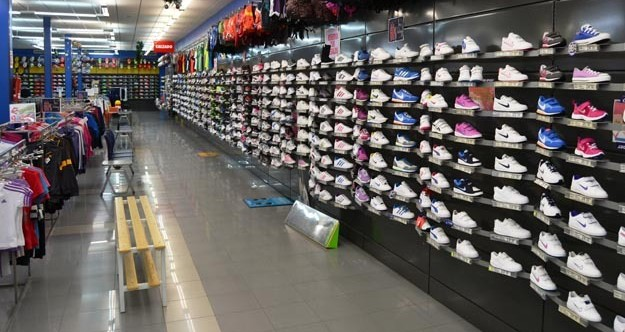

El precio y la calidad son elementos a tomar en cuenta para la compra de cualquier producto o servicio, esta calidad es un factor que afecta profundamente la confianza del cliente. Así mismo los clientes siempre toman en cuenta el precio para medir el valor y la calidad de un producto, considerando que mientras mejor sea éste más dinero se pagará; pero, ¿funciona exactamente así? Lo descubriremos pensando objetivamente en responder qué es la calidad, qué es el precio y cómo estos afectan al consumidor
¿Qué entendemos por calidad?
Calidad es aquel término que utilizamos para referirnos a las características que definen un buen producto, se puede decir que ésta es la propiedad que da conformidad a los clientes con respecto a aquello que consumen. Decimos que un producto o servicio es de buena calidad cuando satisface las necesidades de quienes lo reciben, así mismo, se habla de un producto de calidad cuando éste tiene una fabricación adecuada y cumple su función correctamente. En el caso de los zapatos online baratos existen diferentes pistas que nos pueden ayudar a conocer la calidad.
Materia prima
El primer punto para hablar de la calidad de un zapato es el material con que está hecho. Existen muchos elementos para construir un calzado: cuero, cuero untado, fibras textiles y más. Lo que afectará la calidad será la utilización de materiales duraderos y cómodos.
La mano de obra
La confección de la ropa siempre ha requerido una persona experta, el tipo de creación afectará el costo y la calidad del mismo. Zapatos hechos a mano, de forma industrial, a medida o en serie; todo eso afectará la calidad del producto.
La comodidad
También conocida como propiedad anatómica se refiere a aquella sensación de agarre que posee un buen calzado. Mientras mayor agarre y confort brinde el zapato, mejor será nuestra percepción de él.
La marca
Anteriormente hemos dicho que la calidad se fundamenta en la percepción del cliente, de esta manera la marca puede afectar esta percepción; una marca de gran fama generará una confianza enorme en el consumidor.
El factor precio
El precio es el último punto que nombraremos y el que toma mayor relevancia para este artículo, debido que al comprar zapatos online es casi lo primero que observamos. El precio es el valor monetario que le damos a un producto, se dice que mientras más esfuerzo se invierte en él mayor será su costo en el mercado, pero esto no es una respuesta invariable.
La relación del precio y la calidad
La cantidad de dinero que pagamos por un producto o servicio siempre lo utilizamos como referencia para medir la calidad, más, la verdad es que eso no es lo único que refleja el precio. El precio de unos zapatos online baratos estará cambiando debido al tipo de distribución, la marca y otros elementos de interés como puede ser la demanda que tenga un producto específico por parte de la mayoría de los compradores. La realidad es que un calzado no requiere un precio elevado para ser bueno, ya que existen muchas marcas nuevas que brindan excelentes productos y a través de precios un poco más bajos tratan de hacerse un lugar en este mercado sumamente competitivo.